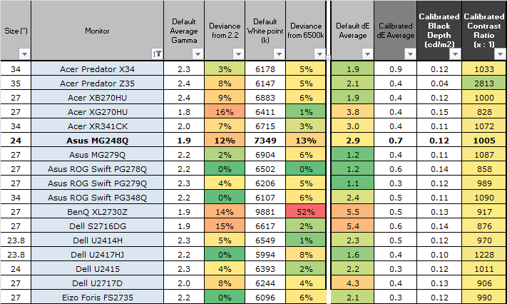
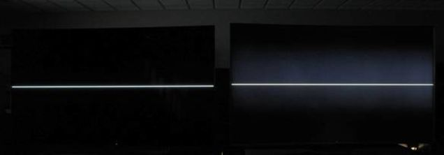
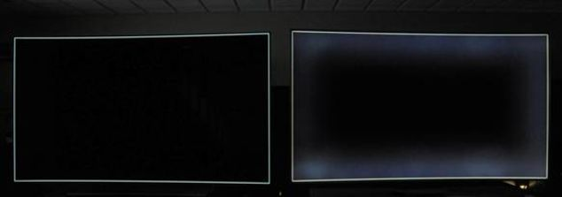

20160723 - Why Motion Blur Trivially Breaks Tone-Mapping - Part 2
Continuing from last post...
The question remains how to "fix it"?
Any "fix" requires that the post-tone-mapped image is physically energy conserving under motion blur.
As in energy conserving from the perspective of the viewer looking at the display.
This requires, by definition, knowledge of the tone-mapping transfer function.
On conventional displays this is not a problem, the application owns the tone-mapping transfer function.
However all the standards bodies for the new HDR Displays (HDR-10, Dolby Vision, ...)
decided to do something rather rash:
they took away the ability for you the developer to tone-map, and gave that step to the display OEM!
Ouch!
Long but important technical tangent for those who haven't been following what is happening in the display world, here is a refresher.
Until recently you have enjoyed the freedom of targeting a display with enough knowledge of the output transfer function to do what you need.
Basically on PCs you use sRGB, on Mac you use Gamma 2.2, and on HDTVs you use Rec709.
This ends with "HDR" Displays.
HDR Display signals like HDR-10 have switched from display relative to a absolute nits scale signal
with absolute wide-gamut primaries both of which are far outside the realm of capacity for a consumer display to output.
Each display has a different capacity.
Luminance range for the HDR signal is {0-10000 nits}, but it is roughly only {0-500 nits} for an OLED display (yeah likely not even a stop brighter than the LDR screen you are reading this post from).
Gamut for the signal is Rec 2020, but gamut for the displays are around P3.
The only consumer devices which are similar in gamut to Rec 2020 are the MicroVision-based pico laser projectors, and related licensed products, which have existed for a while.
In order to reach such a wide gamut they resort to ultra narrow primaries which have a side effect: metamerism
(
meaning all viewers see something different on the display, they are impossible to calibrate for multiple human viewers).
There also has existed a market selling displays over 5000 nits, the outdoor LED sign industry.
While LCD HDR TVs are driven by LED back lights,
adapting outdoor sign LEDs would require water cooling, and power draw which is very far outside the range of what is acceptable in the consumer space.
Point being, the range of the HDR signal will remain outside of realm of consumer displays for the foreseeable future: they will always be tone-mapped when driven by these new "absolute" scale signals.
In fact, the HDR standards *require* the display to tone-map the input signal and reduce to the range that the display can output.
But the tone-mapper is up to the display OEM (or possibly some other 3rd party in the signal output chain in the future for non-TV cases).
OEMs like to have a collection of different tone-mapping transfer functions depending on TV settings like "standard", "movie mode", "vivid", etc.
You as a developer have no way of knowing what the user selected, and each TV can be different, even within the same product due to firmware updates.
So yes, the HDR TV standard for tone-mapping is effectively random!
Double Ouch!
Many developers understand what it means to target "random", because existing HDTVs already have this problem with things like contrast and saturation settings, just not to the extent of HDR TVs.
The only way to author content is to take and purchase a large collection of displays,
then play whack-a-mole, take the cases with worst case output visually, and keep re-adjusting the content until it looks ok on the largest amount of displays.
The problem with this, besides the expensive iteration cycles, as many color professionals know,
is that when you cannot target calibrated displays,
you also cannot push to the limits of the displays (especially in the darks),
you must play it safe with content, and accept that your visual message gets diluted before your consumer sees it.
But it gets better (well at least sarcastically speaking): you also cannot really calibrate these new HDR displays!
Triple Ouch!
Both LED driven LCDs and OLEDs have different problems. Lets start with LCDs.
The
UHD HDR certification label
requires an output contrast range which is physically impossible for LCDs to display without cheating.
Quoting the above press release for the part applying to LCDs: "
More than 1000 nits peak brightness and less than 0.05 nits black level".
Taken literally that means 1000/0.05 or a 20000:1 contrast ratio.
PC LCD displays reached their ultra cheep pricing due to cutting panel quality, they typically top out at around 1000:1 ANSI contrast.
Below is a table yanked from TFT Central showing some recent measured examples.

The best LCD displays are around 5000:1 ANSI contrast.
The HDR TV industry high-end LCD models use LCDs which have around 4000:1 ANSI contrast.
So LCDs are anywhere between 2 to 5 stops away from the minimum requirements for the HDR label.
Now on to the cheating part, enter Local Dimming.
The back-light of these LCDs are driven by a regular grid of a hundred or so LEDs (called zones) each which can be controlled individually.
It then becomes possible to very coarsely adjust black level by dropping down peak white level in a given zone.
Lets go through an example of how this works with a LCD panel capable of 2000:1 ANSI contrast,
full _______ bright zone -> _2000:1 contrast ratio from display peak to black level in zone
1 stop_ less bright zone -> _4000:1 contrast ratio from display peak to black level in zone
2 stops less bright zone -> _8000:1 contrast ratio from display peak to black level in zone
3 stops less bright zone -> 16000:1 contrast ratio from display peak to black level in zone
4 stops less bright zone -> 32000:1 contrast ratio from display peak to black level in zone
Now lets see at what this looks like visually on a real display with some simple test cases.
First a white line going through the center of the screen, then a white line outlining the screen.
The image on the left is on a display without Local Dimming and represents what the output is supposed to look like,
the image on the right is on a display with Local Dimming.
Images below yanked from Gizmodo.


This visually shows exactly why it is impossible to calibrate a Local Dimming display,
because the error introduced into the signal by the TV exceeds all sane standards for calibration.
Quite literally these displays have horrible "uniformity".
The error introduced by the display in the blacks can range 2-5 stops depending on the quality of the LCD panel.
Bringing this back to authoring content, the display introduces it's own "square-ish bloom filter".
Where the "square-ish bloom" doesn't move as the bright content moves by a fraction of a zone,
and where the bloom doesn't actually scale in intensity with the average intensity of the output signal.
Instead even a tiny amount of highlight will cause the full "bloom",
because the display needs to fire the associated zone at peak to correctly reproduce the brightness of just a few pixels.
Also the color of the "bloom" might not track the color of the associated highlight(s).
No self respecting developer would ever release a game with such poor quality "bloom".
This becomes even more of a problem with real-time games.
Existing games often have bright UI elements wrapping the screen, or overlaid on top of game content.
The reason this UI content is bright, is because it needs to be, in order to be visible over in-game content.
Existing LDR PC displays often reach roughly 400 nits, so these new "HDR" LCD displays are only a little over 1 stop brighter (UHD HDR cert minimum is 1000 nits).
Taking the example of a 2000:1 ANSI contrast UHD "HDR" labeled display,
any 400 nit white text in that UI for instance is going to bring the nearby zones to close to 1 stop from peak,
which drops the effective contrast ratio to around 4000:1,
and will introduce "square-ish bloom" if the game content is dark.
High quality "non-HDR-labeled" displays from the past will actually produce much better quality output than current HDR LCDs,
and they don't require any new HDR signal to do so.
For example, the circa 2013
Eizo Foris FG2421 120 Hz LCD as reviewed by TFT Central
has around a 5000:1 ANSI Contrast ratio without resorting to Local Dimming and has a low-persistence mode for gaming.
Older top-of-the-line discontinued Plasma displays are much better than these new HDR LCDs because they don't have Local Dimming.
Plasma unfortunately was ended by the display industry.
Like OLED, Plasma is not as energy efficient as the LEDs driving the LCD back lights, so they get lower APL peaks.
Lets look at one of the best, the
Pioneer Elite KURO
PRO-110FD Plasma HDTV from 2007.
The KUDO's ANSI contrast is APL limited measured around 3239:1.
That doesn't really tell the full story, as real content is non-APL limited,
at which point the contrast ratio is measured around 10645:1 which is over double the best current HDR LCDs true contrast ratios
(meaning what is possible without major signal degradation).
Now lets look at OLED.
OLEDs don't have back lights, so they do not suffer from the wows of Local Dimming,
they do however have a "darker" problem, quite literally in fact.
The problem is described quite well by the latest
HDTV Test's LG OLED55E6 4K HDR OLED TV Review:
"the E6V’s default [Brightness] position of “50” has been purposely set up from factory to crush some shadow detail so that most users won’t pick up its near-black foibles. Once we raised [Brightness] to its correct reference value, we could see that the television was applying dithering to shadowed areas to better mask above-black blockiness."
The OLEDs crush the blacks because they have severe problems in near-black uniformity.
From some personal testing and calibration on a slightly older LG OLED,
I could see uniformity problems similar to burn-in that were larger in the darks than a few steps of 8-bit sRGB output.
So while absolute black is quite dark, they don't have enough accuracy in the darks to reproduce anything well when APL is dropped down to levels appropriate for a dark room good for HDR viewing.
These OLEDs can look ok in day time viewing because the default black crush in combination with ambient reflection on the screen masks the problem in the darks.
The black crush problem is a symptom of the larger problem facing OLED TVs. This problem is also described quite well by
HDTV Test's review of the LG OLED65G6P HDR OLED TV,
"We calibrated several G6s in both the ISF Night and ISF Day modes, and found that with about 200-250 hours run-in time on each unit, the grayscale tracking was consistently red deficient and had a green tint as a result (relative to a totally accurate reference). We witnessed the same inaccuracy on the European Panasonic CZ950/CZ952 OLED (which of course also uses a WRGB panel from LG Display).".
OLEDs cannot hold calibration.
OLED as a technology suffers from gradual pixel decay issues.
These latest LG OLEDs resort to a 10-20 minute "Cleaning" attempted auto-re-calibration cycle when the TV is in powered standby
after around 4 hours of viewing time.
Even this cannot solve the problem.
The accuracy of the calibration is poor, which is why OLEDs have such a problem reproducing anything interesting in the darks.
Returning to "Fixing" the Motion Blur Issue
So as established above you are effectively screwed on newer HDR Displays if you use the HDR input signal, tone-mapping is out of your hands.
It is possible on HDR displays to still select the "PC" input and drive the display without tone-mapping using a traditional non-HDR signal.
Often the HDR TVs (given they really are not that bright anyway) still support their full brightness range in that mode.
Some HDR TVs I believe even support disabling Local Dimming.
However there is no guarantee this will be the case or will remain the case.
Also it is placing a large burden on the consumer to be tech savvy enough to correctly navigate the TVs options and do the right thing.
Until game developers organize in mass and throw their combined weight
into forcing a display property query and pass-through signal standard
based on measured minimal pixel-level signal degradation as the cert metric,
you will be forced to live with all the problems of the new HDR standards.
On non-HDR-signal output there are a lot of interesting options for "fixing" the motion blur issue.
Lets break this down into non-photo-real and photo-real categories.
The non-photo-real case is what I'm personally interested in
because it aligns to one of my current at-home projects involving a state-of-the-art Vulkan based engine.
My intended graphics pipeline does {auto-exposure, color-grading and tone-mapping} of graphics elements
into the limited display range
then afterwards does a linear composite of applying linearly processed motion-blur and DOF to the elements.
Thus side-stepping the problem. Everything done post-tone-mapping is energy preserving, so motion does not change Average Picture Level.
One of the interesting things I've found when playing around with low persistence 160 Hz output,
most recently playing through DOOM on a CRT,
is that motion blur still plays an important role in visual quality.
One would think at 160 Hz that motion blur simply isn't necessary.
This is true as long as it is possible to restrict camera motion slow enough, and the eye always tracks exactly with the motion.
But with twitch games where the camera can spin instantly,
the motion can get fast enough such that when the eye is not actively matching the camera rotation,
it is possible to see discontiguous strobes of the image at the 160 Hz refresh.
The eye/mind picks up on edges perpendicular to the direction of assumed motion.
Introducing some amount of motion blur which effectively removes those perpendicular edges, enables the mind to accept a continuously moving image.
For real-time graphics it is impossible to do "correct" motion blur
because of the display limits and because we lack eye tracking.
Instead motion blur serves a different purpose: to best mask artifacts so the mind falls into a deeper relationship with the moving picture.
The desire is that the mind lives in what it imagines the world to be based on what it is seeing,
without being distracted back into the real world by awareness
of things like {triangles, pixels, scan-and-hold, aliasing, flickering, etc}.
This is where the true magic happens, and why games like INSIDE and LIMBO by Playdead,
which are effectively visually flawless,
are so deeply engaging.
As for the photo-real case with content outside the capacity of the display,
I believe it would be quite interesting to re-engineer motion blur to be APL conserving as observed by the gamer,
but to maintain correct linear behavior.
With bloom turned off on a still image,
the actual brightness of various specular highlights is very hard to know due to highlight compression done in the tone-mapper.
This hints at one possible compromise.
Apply motion blur linearly so the color is correct,
but with the pixel intensity as seen post-tone-mapped,
so the APL as observed by the gamer is constant.
Then linearly add a very diffuse bloom to the motion blurred image such that the visual hint of virtual scene brightness remains.
This bloom is computed prior to motion blur using the original pre-tone-mapped full-dynamic-range color.
The bloom must be diffuse enough such that motion length would have not caused a perceptual visual difference in the bloom if computed using traditional motion blur.
Bloom in this case is more like a colored graduated filter or like a fog on the glass.
There are other interesting ideas around this, but that is all I have time for this time ...